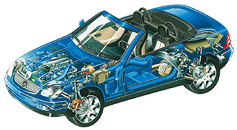

Wenigstens hatte Werner die Aktienmehrheit in der Hand - ein für alle mal.
 Wäre da nicht der leidige Ermittlungsbeamte, könnte er alle Sorgen genauso schnell, einfach und glücklich beerdigen, wie den Alten.